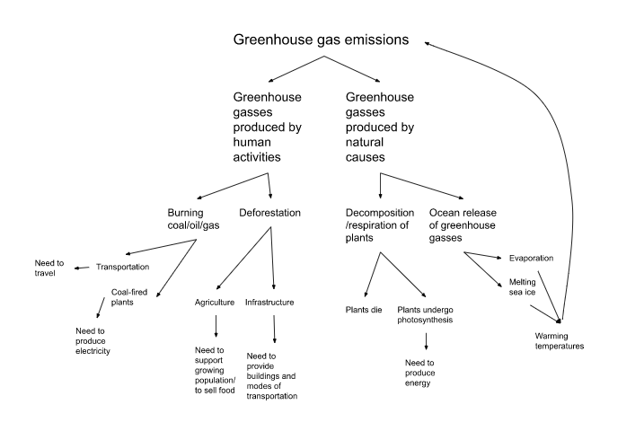
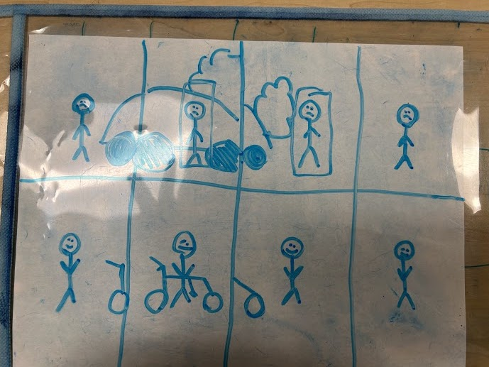
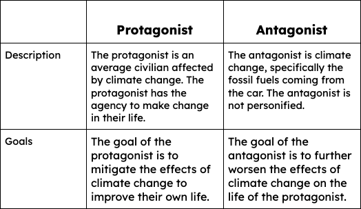
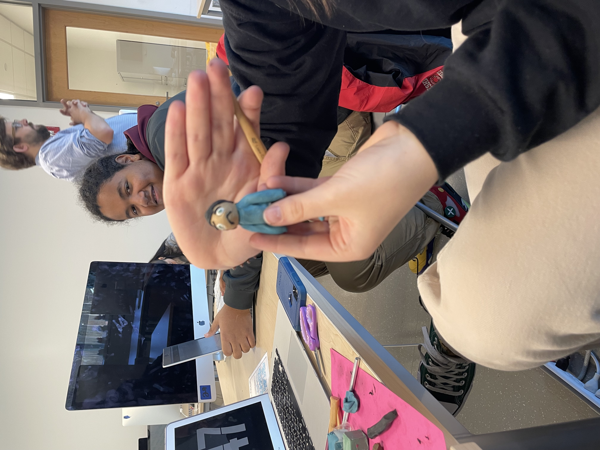
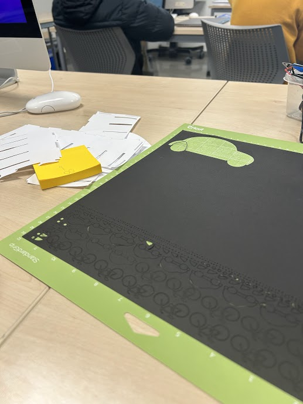
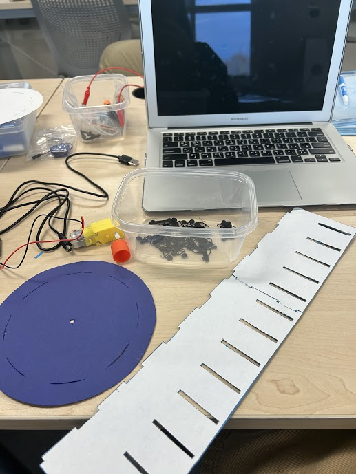
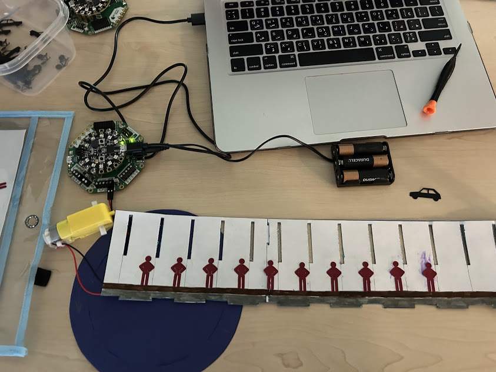
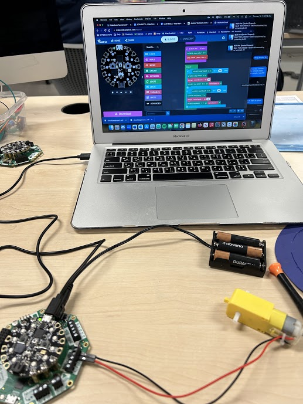
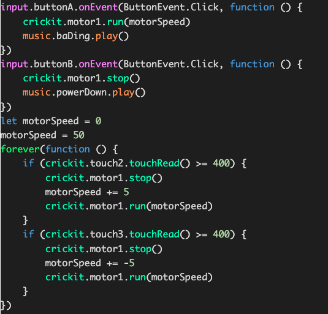

During the making of our zoetropes, the first decision we made was the issue we would focus on. We chose climate change.
Based on the box and arrow model we made, we decided to target an everyday behavior that most people partake in: transportation from place to place. Using cars produces large amounts of carbon emissions, but we understood that people still needed to travel often, so we decided to try to convince people to use bicycles. Bicycles are a much cleaner form of transportation, as they do not produce any carbon emissions.
We then mapped out the story of our zoetrope. Originally, we planned to have one zoetrope with a continuous animation. We placed our character in an environment that would first be affect by a car producing carbon emissions, then by a bicycle producing nothing. This would compare the effects of each form of transportation on the environment and people in it.
Next, we developed the characters, set, and mechanism of the zoetrope. One trait that is important to the protagonist's character is the ability to mitigate climate change, because this is part of the message that we wanted to instill in our viewer. After we developed our characters, we began working on the set and design of the zoetrope, using clay and the Cricut to test out different designs for the character, car, and bicycle.
We first tested out our character's physical design with clay, but we decided that it would be much to heavy and time consuming to make so many clay models of the character.
Next, we used the Cricut to print many small bicycles and cars. We determined that this would be our final method, as it was much quicker and more uniform, but we had to replace the design we used due to the fragility of the paper once it was removed from the Cricut mat. At this point, we decided to make two zoetropes, because we realized that our animation would be too long for one zoetrope. We chose to separate the zoetropes, making one with a car and one with a bike.
To build the zoetrope, we decided to use a template with vertical slits. This would eliminate a lot of time building the zoetrope, as we already had a base to build it. We cut out the template, supported the outside with cardstock, and began gluing the Cricut printouts to the inside. We cut a small hole in the base to accomodate the motor, and further support the base with popsicle sticks.
We added a few more design aspects, such as a road for the bicycle and car, a sidewalk for the character, and drawn grey carbon emissions on the zoetrope with the car.
While my partners worked on aspects of the design, I coded the program for the motor.
The final code caused the motor to spin when button A was pressed and to stop when button B was pressed. The code also allowed us to adjust the speed of the motor from the interactive components of the Crickit board that connected to the motor.